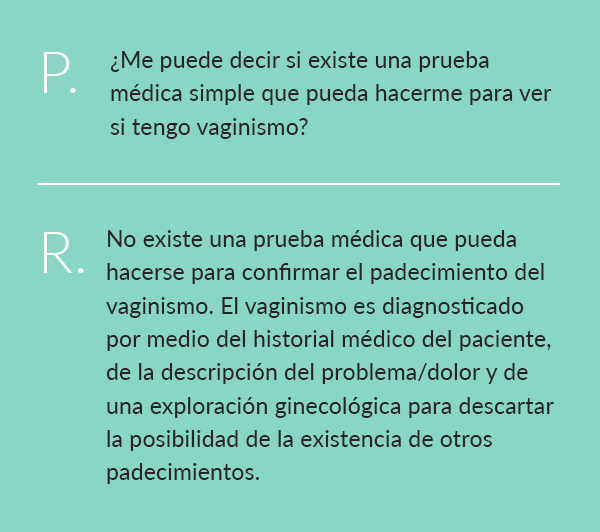
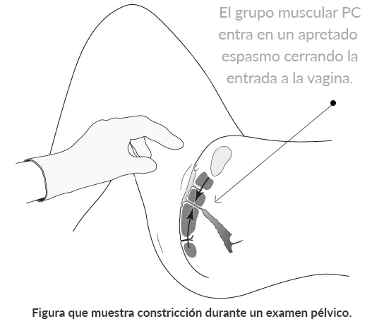

Diagnóstico Rápido
Indicadores fuertes del vaginismo incluyen cualquiera de los siguientes (ver Síntomas del Vaginismo para información más detallada):
Problemas de penetración
Penetración difícil o coito imposible / parejas no consumadas. Los problemas de penetración en la mujer y los matrimonios no consumados son típicamente causados por el vaginismo. La constricción y el dolor son síntomas comunes del vaginismo.
Problemas médicos
Continuo dolor sexual después de un problema pélvico, padecimiento médico o cirugía. Experimentar continuo dolor sexual o constricción después de resolver o manejar un problema pélvico, médico o de dolor es típicamente causado por el vaginismo (también vea dispareunia).
No existe una causa identificable física
Continuo dolor sexual y constricción, sin causa física perceptible. El vaginismo con frecuencia ocurre solamente durante intentos de sexo. Es posible que inicialmente los médicos no puedan encontrar algún problema o causa para las dificultades sexuales.
Evitación del sexo
Evitación del sexo debido a dolor y/o fracaso. Cuando una mujer dice que evita tener intimidad con su esposo porque el sexo no se siente bien o porque se ha vuelto muy doloroso, el vaginismo debe ser seriamente considerado.
Después del parto
Experimentar continuo dolor sexual o constricción después del parto (después de que todo ha sanado) es típicamente causado por el vaginismo secundario.
El Diagnóstico Médico del Vaginismo
Las mujeres con frecuencia sospechan que tienen vaginismo basado en sus síntomas, pero obtener una confirmación médica puede representar un reto. Confirmar un diagnóstico formal de vaginismo pudiera tomar cierta planeación y perseverancia. No existen pruebas médicas conclusas para el diagnóstico del vaginismo así que es posible que haga una serie de visitas a varios médicos o especialistas antes de obtener un diagnóstico médico.
Cuando los médicos inicialmente no pueden encontrar un problema médico específico (una experiencia muy común entre personas que padecen de vaginismo), el resultado común es un diagnóstico incorrecto o la falta de un diagnóstico.
Puede que las mujeres aboguen fuertemente por ellas mismas, insistiendo en un diagnóstico completo de un profesional con conocimiento para descartar cualquier otro padecimiento médico y para confirmar el diagnóstico de vaginismo.
Muchos médicos no tienen conocimiento del vaginismo, por lo que parte del proceso es simplemente encontrar a un médico con conocimiento del padecimiento. Un diagnóstico exitoso del vaginismo es típicamente determinado por medio de la historia clínica del paciente y la descripción del problema, una exploración ginecológica y el proceso de descartar la posibilidad de otros padecimientos. Hablar con médicos sobre problemas sexuales puede ser difícil. Pena, vergüenza y ansiedad con frecuencia se hacen presentes, haciendo difícil comunicarse y obtener una atención adecuada.
Un diagnóstico médico es útil para eliminar cualquier duda o ansiedad relacionada a identificar el padecimiento y permite que la mujer tenga más seguridad para avanzar hacia soluciones de tratamiento.. Los padecimientos de dolor sexual, como el vaginismo, comúnmente se diagnostican incorrectamente o no se tratan. Las mujeres necesitan ser muy valientes para perseverar hasta que sus inquietudes reciban la debida atención y se haya obtenido un diagnóstico médico confiable. En algunos casos y lugares, un diagnóstico médico sólido no siempre es posible o no está disponible. Esto es particularmente cierto en naciones con menos opciones de atención médica.
Nuestra misión es la de ayudar al mayor número posible de mujeres que sufren de este padecimiento.
Este sitio Web presenta en detalle información importante sobre el vaginismo e invitamos a todas aquellas personas que sospechen este posible diagnóstico a leer las diferentes áreas de temas tales como síntomas, historias, causas, tratamiento, retroalimentación del usuario/médicos y preguntas más frecuentes, para aprender lo más que puedan sobre este padecimiento y tal vez dar luz a su propia situación.
En la actualidad existen muchos recursos excelentes para ayudar a las mujeres a aprender sobre el vaginismo y su tratamiento. Los libros de autoayuda proporcionados por medio de nuestro sitio Web, ofrecen información detallada sobre los síntomas, causas y protocolos de tratamiento para auxiliar exitosamente con el vaginismo.

Sitios Web del campo médico, tales como los que se listan en el área de la comunidad de vaginismo puede ayudar a las mujeres a encontrar información útil sobre los diferentes tipos de trastornos de dolor pélvico para ayudarles a diferenciarlos y entender los diferentes padecimientos. Existen muchos especialistas en diversos campos que pueden auxiliar con el diagnóstico y tratamiento de problemas del piso pélvico. Fuentes para la ayuda con el diagnóstico del vaginismo también puede incluir:
- Ginecólogos – Un ginecólogo es un doctor médico con entrenamiento especializado en el diagnóstico y tratamiento de problemas pélvicos femeninos. No todos los ginecólogos tienen experiencia con el diagnóstico y tratamiento del vaginismo, pero los ginecólogos tienen muchísimo conocimiento y podrán descartar algún otro padecimiento, clarificar problemas de salud y pueden ser un gran aliado en el camino a la restauración.
- Terapeutas Físicos – Un número creciente de terapeutas físicos se están especializando en padecimientos del piso pélvico y trastornos de dolor sexual como el vaginismo. Muchos terapeutas físicos trabajan con pacientes para establecer programas en el hogar permitiendo que las mujeres trabajen a su propio paso, en privado y a un costo más bajo. El American Physical Therapy Association, Journal of Women’s Health Physical Therapy, publicó una recomendación para el uso de nuestros materiales para todas las mujeres con vaginismo, y muchos terapeutas usan los materiales para ayudar a guiar a sus pacientes en un tratamiento en el hogar exitoso.
- Sexólogos, psicólogos y consejeros – Existen muchos otros especialistas con diferentes grados de experiencia en el vaginismo.
El Examen Pélvico Como Parte del Diagnóstico del Vaginismo
Una de los aspectos más importantes del diagnóstico del vaginismo es simplemente la eliminación completa de otros posibles padecimientos físicos o médicos que pudieran estar causando los síntomas, dejando así una gran probabilidad de vaginismo.
El proceso de eliminación es una parte crítica de la diagnosis del vaginismo. El proceso de diagnóstico típicamente incluye proporcionar un historial médico y sexual y someterse a un examen pélvico o ginecológico.
El médico discutirá el lugar y la frecuencia del dolor para ayudar a emitir un diagnóstico correcto de vaginismo o pudiera solicitar se hagan otras pruebas para ayudar a descartar cualquier otro problema aparte del vaginismo.
Nótese que algunas mujeres se sienten más cómodas expresando sus problemas y siendo examinadas por una mujer especialista de salud. Cuando existe un problema, animamos a las mujeres a buscar que la atienda una especialista. Tomar un enfoque proactivo sistemático ayudará a que una persona obtenga una mejor atención y mejores resultados.
Retos Únicos Con el Diagnóstico del Vaginismo
Los síntomas de ardor, constricción y dificultad de penetración pudieran no ser siempre percibidos durante el examen pélvico. Para algunas mujeres, estos síntomas ocurren solamente durante intentos de relaciones sexuales. Por esta razón, el diagnóstico debe incluir una seria consideración de las inquietudes de la mujer, inquietud que pudiera ser vagamente expresada como “estoy teniendo dificultad con el sexo”.
A veces, atareados profesionales de la salud fallarán en identificar los síntomas del vaginismo y darán un consejo convencional (pero de poca ayuda) como simplemente “use más lubricante”, “trate de relajarse más”, o “tome un poco de vino”. Esto pudiera ser debido a la falta de conocimiento del vaginismo o por basarse en literatura desactualizada sobre el padecimiento. Debido a la constricción de los músculos PC algunas mujeres con vaginismo encuentran los exámenes ginecológicos extremadamente dolorosos y no son capaces de tolerarlos. Si una mujer sospecha que pudiera tener dificultad completando un examen, debe comunicárselo a su médico.
En lugar de reconocer la padecimiento del vaginismo, un médico pudiera falsamente creer que la vagina es demasiado pequeño, cuando, o si es que, ella no es capaz de completar un examen pélvico.
Existen ajustes (p.ej. posición corporal, tamaño del espejo utilizado y apoyo de enfermería) que se pueden hacer para contribuir a una experiencia más positiva. El médico familiarizado con el padecimiento del vaginismo será el más adecuado para proporcionar un ambiente cómodo y delicado.
Cuando existe una constante constricción vaginal durante el examen pélvico, pudiera parecerle al médico como que es una vagina inusualmente pequeña o que es un problema de anormalidad del himen.
Esto combinado con la urgente queja de la paciente de no poder tener sexo con penetración con su esposo o que el sexo realmente duele, pudiera llevar aún más a la falsa conjetura que la vagina requiere de cirugía correctiva para agrandar la abertura y permitir la penetración.
Aunque pudiera existir raras excepciones, las mujeres con vaginismo típicamente tienen genitales completamente normales. La constricción de la vagina se debe exclusivamente al fuerte espasmo involuntario de los músculos del piso pélvico. Desafortunadamente, algunos médicos continúan con el proceso del examen pélvico, causando una gran molestia y dolor para la mujer. Esta traumática experiencia en sí puede contribuir al padecimiento del vaginismo.
Con el vaginismo, el simple acercamiento de la mano del médico pudiera tener el efecto de la constricción de los músculos del piso pélvico y hacer parecer la entrada vaginal muy pequeña y constricta. Nótese que no todas las mujeres con vaginismo experimentarán constricción durante un examen médico (la constricción pudiera sólo ocurrir durante intentos de sexo).
Existen muchos peligros debido a diagnósticos incorrectos de profesionales desinformados. Cirugías y medicamentos innecesarios, invasivos y potencialmente dañinos han sido sugeridos a mujeres con vaginismo que no han sido adecuadamente diagnosticadas. La incorrecta diagnosis y el fomento de cirugías invasivas o de poca ayuda, son algunas veces el desafortunado resultado de toda esta confusión.
No existe una cirugía para curar el vaginismo. Es muy importante que busque una segunda opinión si se le ha recomendado una cirugía para "anchar" la abertura vaginal.
Es muy importante que busque una segunda opinión si se le ha recomendado una cirugía para ‘anchar’ la abertura vaginal, ya que esto normalmente no resuelve el problema de penetración, pero más bien pudiera complicar el problema aún más. Cirugías y medicamentos innecesarios, invasivos y potencialmente dañinos han sido sugeridos a mujeres con vaginismo que no han sido adecuadamente diagnosticadas.
El vaginismo es un padecimiento altamente tratable que no requiere de procedimientos invasivos (vea Tratamiento del Vaginismo). Muchas mujeres que buscan una diagnosis terminan frecuentemente sin un diagnóstico de los médicos, quienes fallan en encontrar algo físicamente mal y sienten que no hay nada más que puedan hacer. Puede que ellos no consideren un diagnóstico de vaginismo simplemente debido a una falta de conocimiento.
Ejemplo de Guía: Narrativa Auto Guiada de Dolor Sexual
Para auxiliar a las mujeres a obtener un diagnóstico confiable para su dolor sexual, el siguiente bosquejo de ejemplo incluye algunas sugerencias para preparase para su visita al médico. El bosquejo brinda ejemplos relacionados al padecimiento del vaginismo, sin embargo, puede ser fácilmente cambiado para ayudarla a comunicar los detalles de cualquier problema de dolor sexual o pélvico:
1. Presente el Problema
“He estado teniendo problemas durante el sexo y espero que usted me pueda ayudar”
2. Proporcione una Descripción del Dolor
Sucede cuando… “mi esposo trata de poner su pene dentro de mi vagina” o “una vez que él está dentro y empieza a moverse siento ardor y me tenso”, etc.
El dolor se encuentra en… “a la entrada de mi vagina. Mi vagina es como una pared; él sencillamente no puede entrar” o “después de que está dentro mío siento ardor alrededor de su pene, justo dentro de la entrada”, etc.
El dolor dura… “siempre que él continúe tratando, especialmente si tratamos de introducirlo a fuerza. En cuanto desiste ya no hay dolor”.
Esto ha estado sucediendo desde… “nuestra luna de miel hace dos años y ha continuado sucediendo cada vez que tratamos de tener sexo” (vaginismo primario) o “mi histerectomía hace ocho meses” (vaginismo secundario), etc.
Se siente como… “ardor” … “punzadas” … “como que él está chocando con una pared” … “constricción durante/al entrar”, etc.
He tratado de reducir o eliminar el dolor… “usando lubricantes, cambiando de posiciones sexuales y relajándome más”.
He podido/no he podido… “insertar un tampón, o tener un examen ginecológico completo”.
3. Mencione Cualquier Problema Pasado
¿Ha previamente tenido alguna enfermedad de transmisión sexual, infección por levaduras, problemas de la vejiga, o cualquier otro dolor pélvico fuera de la penetración?
4. Mencione Cualquier Abuso Sexual Pasado
5. Diga Cuál Piensa Que Sea el Problema
“Creo que puede ser vaginismo. Mis síntomas se parecen a los descritos en un artículo que leí. Sin embargo, he leído que hay otras cosas que pueden ocasionar dolor durante el sexo y quisiera descartarlas”.
Nota: Informe a su médico si ha podido tener alguna vez relaciones sexuales sin dolor.